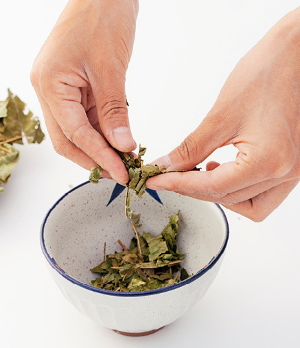
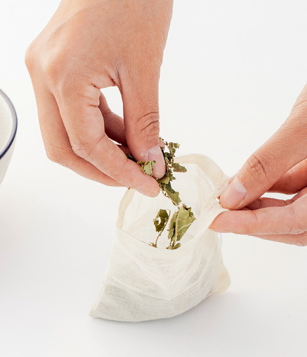

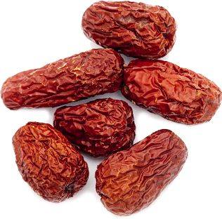
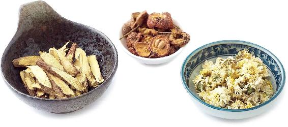
很多人有慢性胃病而不自知，因为慢性胃病不一定有明显症状。等到出现嗳气、泛酸、胃痛这些情况，其实已经拖得比较久了。
如果觉得自己消化功能比较弱，或者经常感觉吃饭以后有点腹胀，就要注意调理，可以喝三焦健胃茶。
三焦健胃茶与蜂蜜陈皮茶都有健脾养胃、调理胃溃疡的功效。它们的区别是：三焦健胃茶增强脾胃消化功能的效果比较好，适合每日调养；蜂蜜陈皮茶促进溃疡面愈合的效果比较好，适合胃痛时辅助缓解。
【原料】
大枣500克、川陈皮200克、大米250克。
【做法】
【功效】
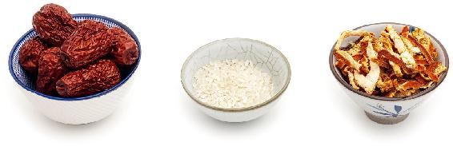
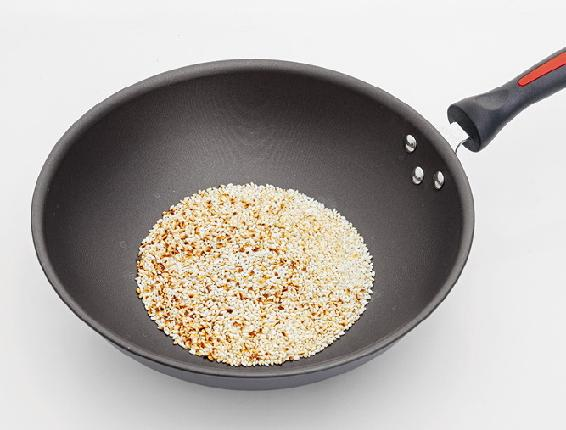
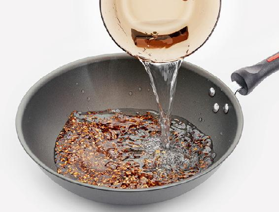
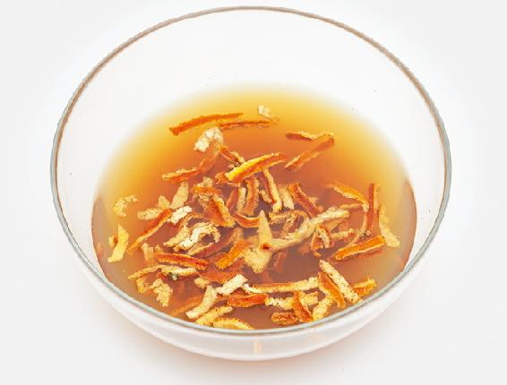
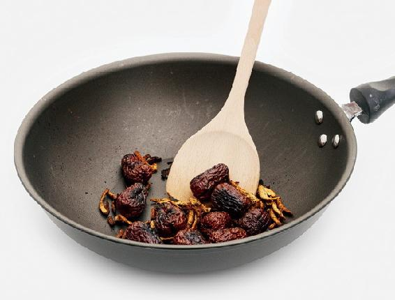
允斌叮嘱
泡茶饮用后，用过的焦米可以加上白米一起煮粥，有助消化的作用。
读者评论
——荷叶
——心怡
秋天丝瓜老了之后，药性更好，有疏通人体络脉的作用，能通乳汁，还能祛除风湿，对痛风病人很有帮助。
丝瓜是清热毒的，所以它特别寒，阳虚的人不能多吃，吃的时候一定要配姜。
老丝瓜晒干之后去掉皮和籽，就变成平时我们洗碗用的丝瓜络了。丝瓜络有助于清除络脉中的风湿。老丝瓜煮水，对于痛风病人特别有帮助。
【原料】
当年新收的老丝瓜3根。
【做法】
【功效】
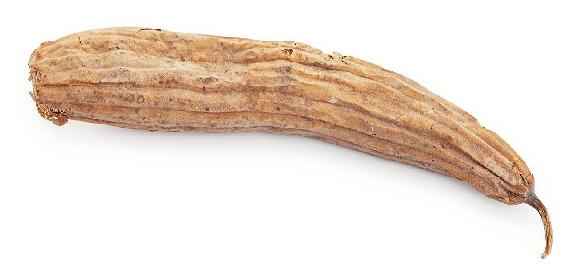
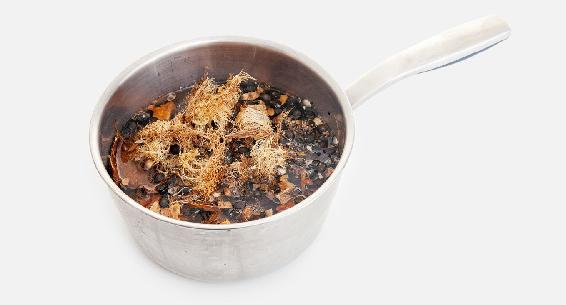
允斌叮嘱
如果找不到老丝瓜，可以去药店买入药用的丝瓜络。药店卖的丝瓜络有两种：一种是普通丝瓜去皮晒干的，称为丝瓜络；一种是粤丝瓜连皮一起晒干的，称为丝瓜布。粤丝瓜产于广东，它的形状比较特别，带有10条棱。两者的效果是差不多的。
读者评论
——4群北燕
——11群读者
——读者朋友
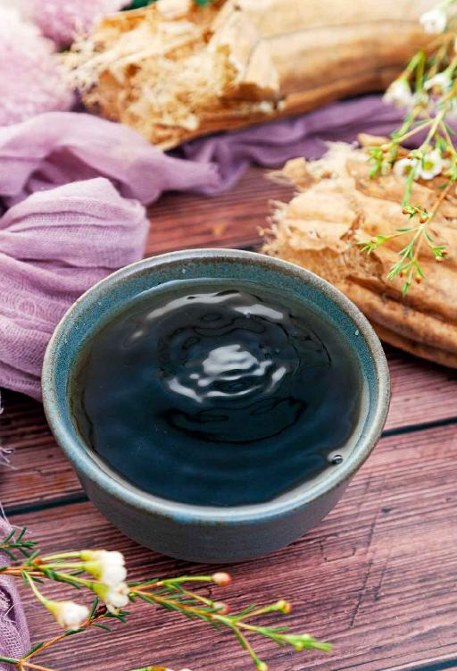
把处理好的松针放在阴凉通风处晾干，就可以装瓶收藏起来，松针的香味能够长久保持。
【原料】
新鲜松针500克
【做法】
【功效】
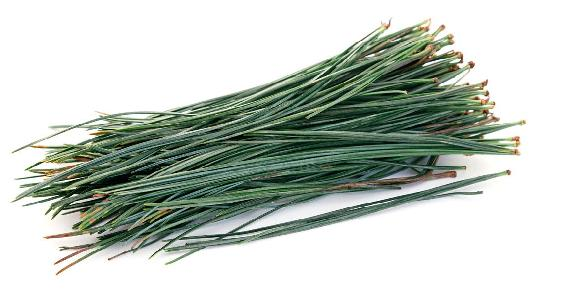
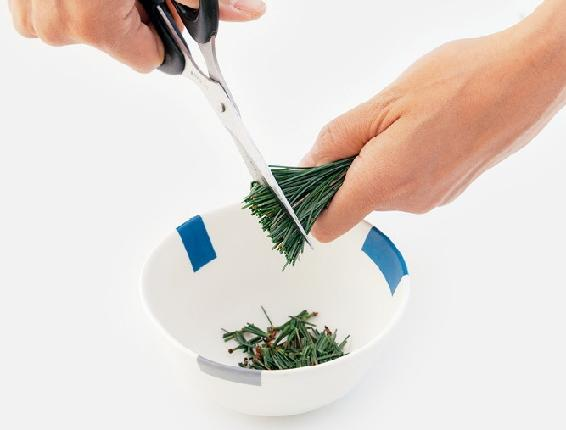
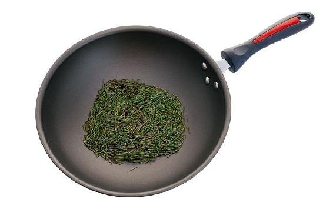
允斌叮嘱
松针茶一定要喝温热的。
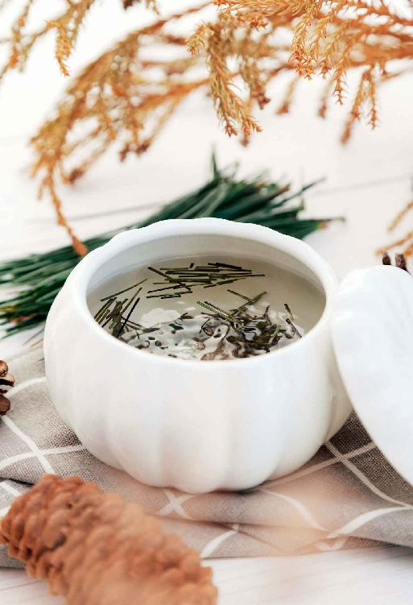
枸杞子并非越甜越好（甜表示果糖含量高）。好的枸杞子是药用枸杞子，并不是很甜，而且后味微苦。这种苦味来自于它所含的甜菜碱。
甜菜碱有降糖、降脂、抗氧化的作用。糖尿病人、胖人可以选择含甜菜碱丰富的枸杞子品种来吃
【原料】
枸杞子120克、麦冬60克。
【做法】
【功效】
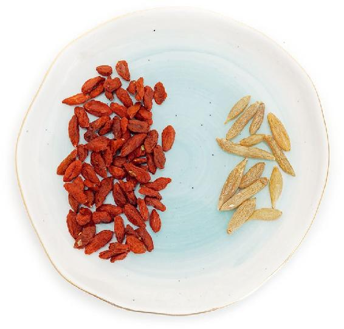
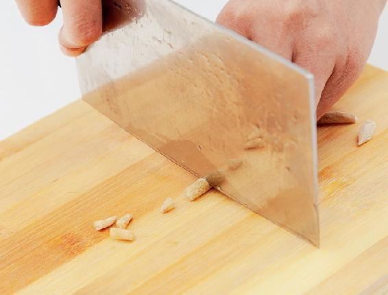
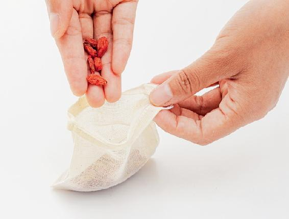
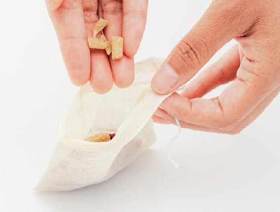
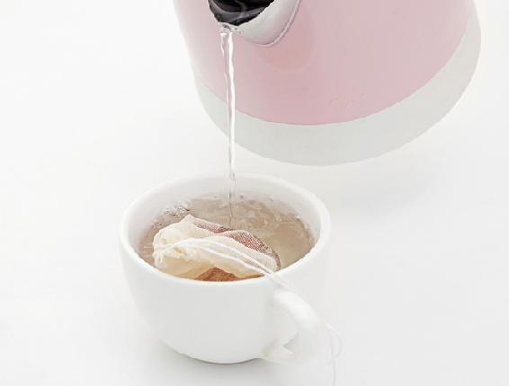
允斌叮嘱
读者评论
——沙漠玫瑰
——hermes
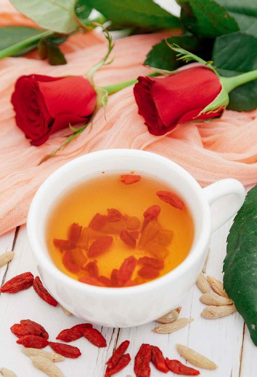
长期患糖尿病的人，往往脾肾都虚。有的吃降糖药几年后，药效越来越差。有的出现各种慢性并发症，比如全身酸痛、手脚发麻、血压不稳定等。
这种体虚的糖尿病人，坚持喝一两个月香椿茶，身体会有意想不到的变化，各种不适感都能得到缓解。有的朋友甚至发现，吃药也不能控制的血糖也有所改善。
【做法】
【功效】


允斌叮嘱
秋季的香椿叶对糖尿病人调理作用更佳。
读者评论
——绣气小姐
——睿睿奶奶
——莲
——跳动的心
——一丹
允斌解惑
Hui3355问：香椿叶煮水喝，对降血糖效果特别好，一个月可以从10.3降到6.4。但是中间有反复，不知道是什么原因，希望陈老师能在新书中说明一下。谢谢陈老师的无私奉献。
允斌答：糖尿病是一个顽固的慢性病，需要长期调理，香椿茶是辅助，在日常生活中还要注意系统全面地进行饮食调理，特别是要补好脾和肾。

菊花能通利血脉，对于预防高血压和心血管疾病都有帮助。白菊花对肝阳上亢型的高血压降压效果非常好，还很平和。
老人血压高，或有冠心病，平时都可以常喝白菊饮。
【原料】
500克白菊花。
【做法】
【功效】
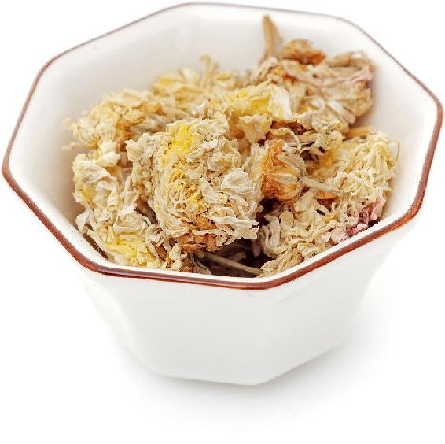
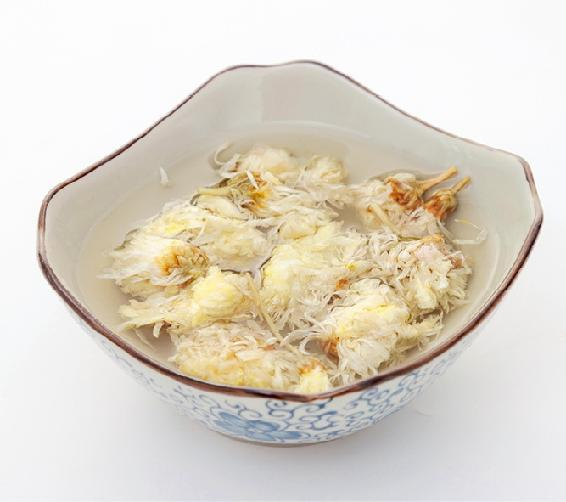
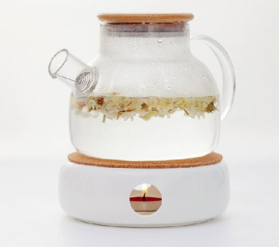
允斌叮嘱
读者评论
对菊花的认识一直就是上火的时候喝，后来看了允斌老师的书，不仅了解了菊花的分类，还了解了很多菊花的功效，年纪大了，饮食不讲究导致血脂高，没控制好又继发高血压。自从喝上了老师书里的降压茶，血压竟然慢慢地降下来了，还很稳定，不用吃药就能降血压真的太神奇了。
——大浮
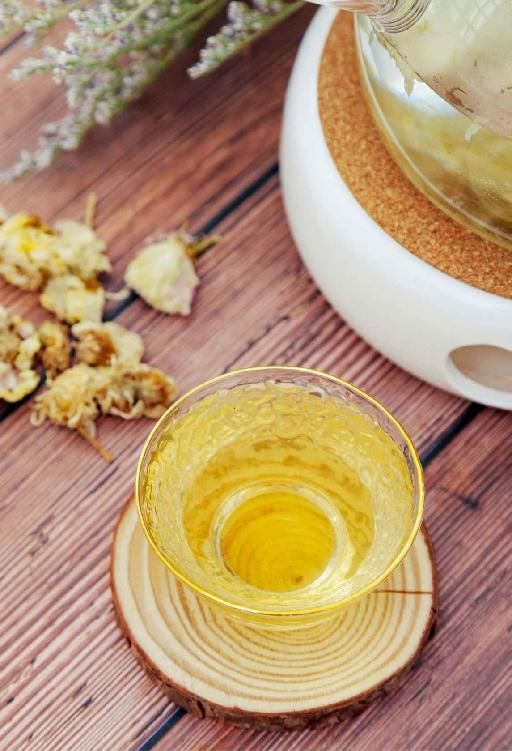
芹菜有三种：西芹、药芹和香芹。西芹药性最弱。香芹和药芹的作用相近，香芹偏于清肺化痰，药芹偏于平肝利湿。降血糖可以用香芹，降血压就用药芹。药芹就是传统老品种的中国芹菜。
【原料】
干药芹根60个、大枣60个。
【做法】
【功效】
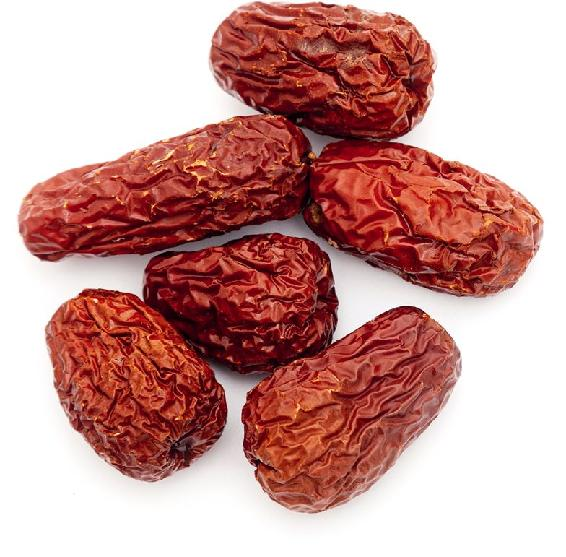
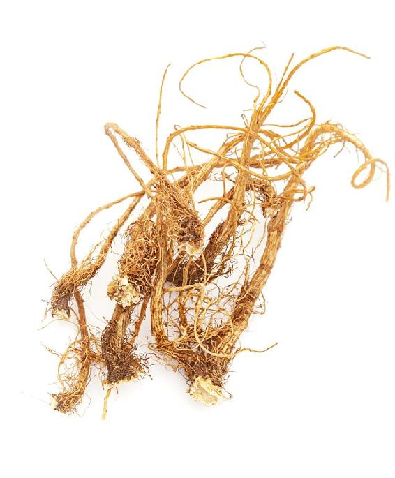

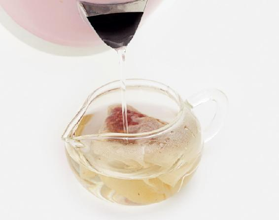
允斌叮嘱
芹菜根一定要用热水加上面粉多泡洗几遍，再用开水烫一下，尽量洗得干净些再用。
读者评论
前几天我妈在社区量血压，高压130，低压90。之前是高压150，低压90，看来最近的食疗养生和使用经络梳、药枕的效果很好，医生还问是不是吃降压药了。
——Betty
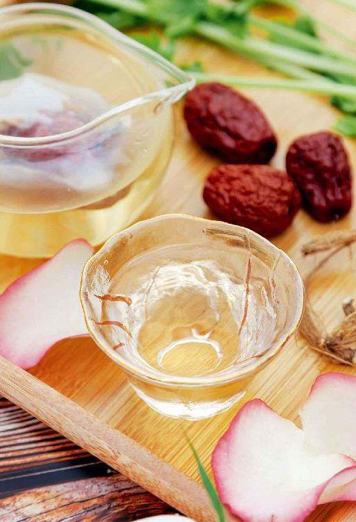
山楂是现代富贵病的克星。它降血脂、降血压的功效很好，又能消肉食，减肥，还有强心的功效，对于冠心病、心律不齐都有调理作用。
【原料】
山楂150克、杭白菊30克、甘草30克。
【做法】
【功效】
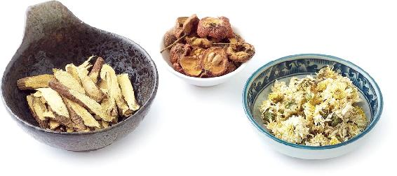
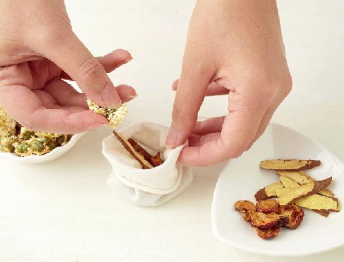
读者评论
父亲高血压很多年，降压药也吃了很多，前一阵子查出有血管硬化的趋势，因为降压药吃得太久了。想起陈老师的书里有降压的方子——菊果降压茶，天天叮嘱妈妈泡给他喝，前一阵回家听说血压已经降下来了，也不爱上火了，耳清目明！
——37群Betty
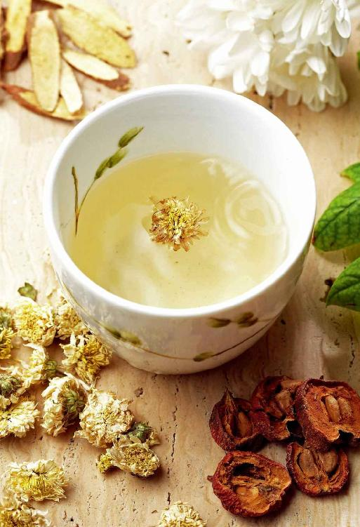
这道小茶方可以清脂减肥，适合肥胖兼血压高、便秘的人饮用。
【原料】
山楂150克、杭白菊30克、决明子150克。
【做法】
【功效】
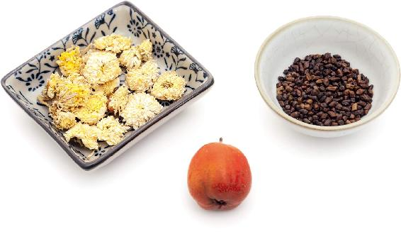
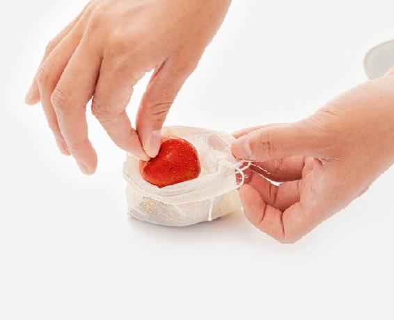
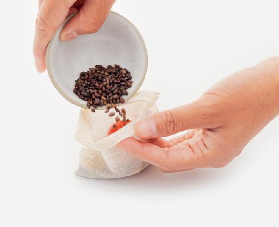
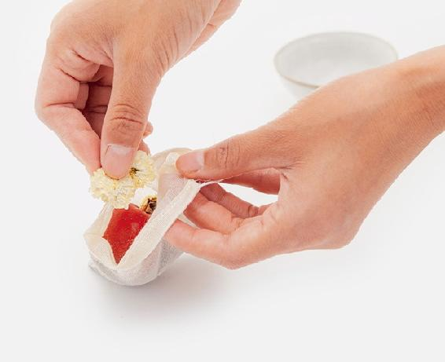
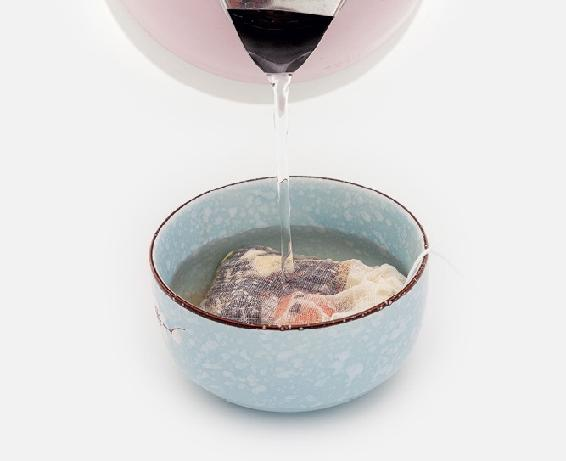
读者评论
书中清肝降脂茶帮助中度脂肪肝的家人减轻到了轻度，今年体检更轻微了！
——水
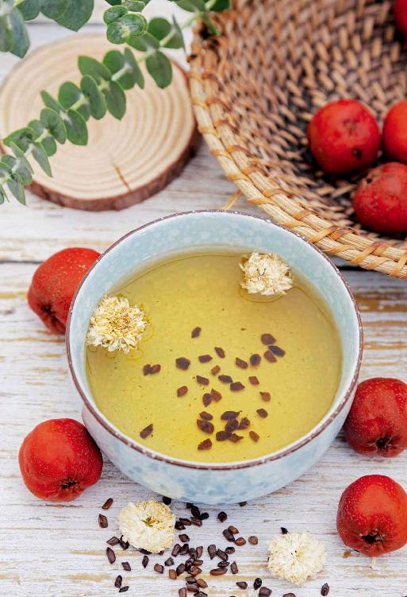
【原料】
冬瓜皮（干品）60克、山楂肉150克、乌龙茶30克。
【做法】
【功效】
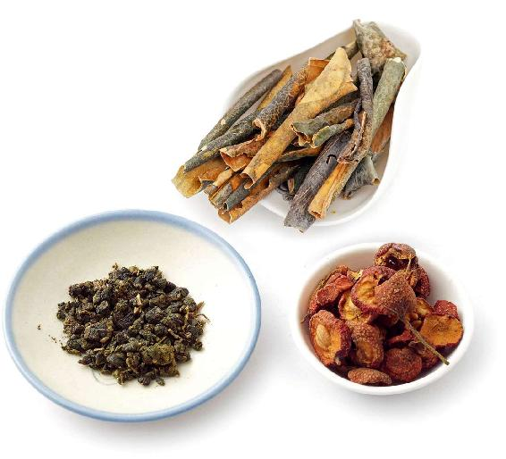
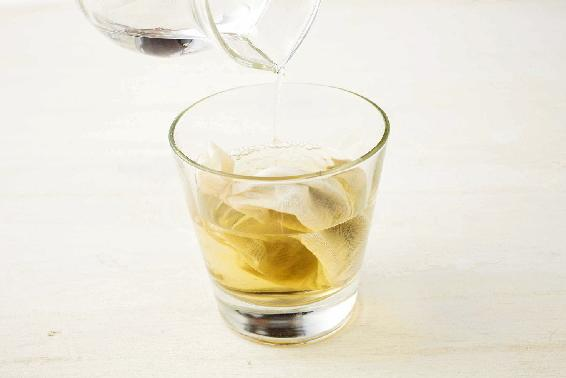
读者评论
——16群艾丽
——芳菲
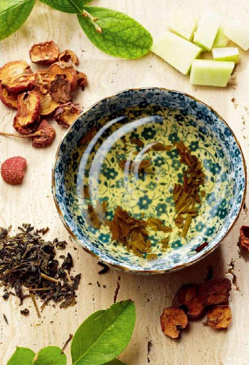
【原料】
葡萄干100克、黑桑葚干100克、薏苡仁100克。
【做法】
【功效】
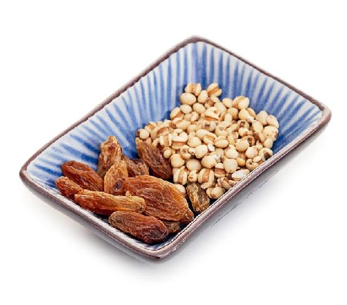
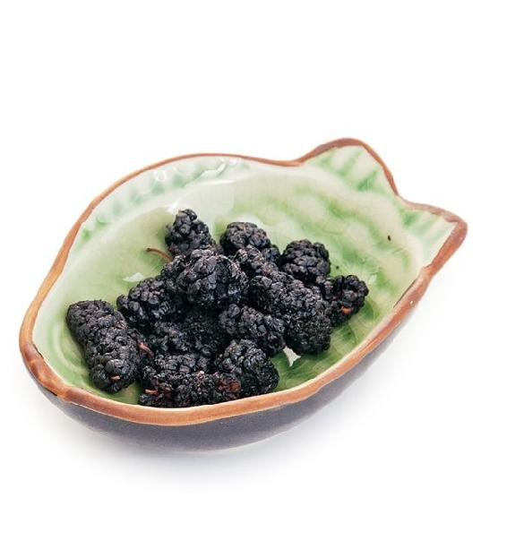
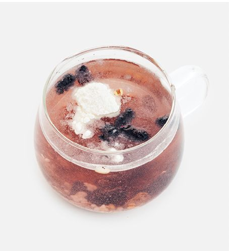
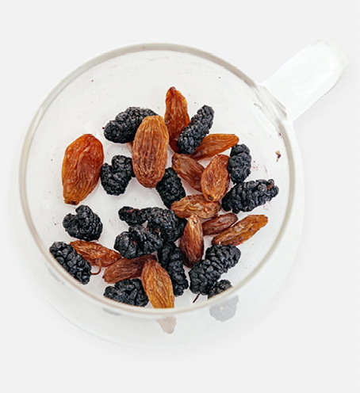
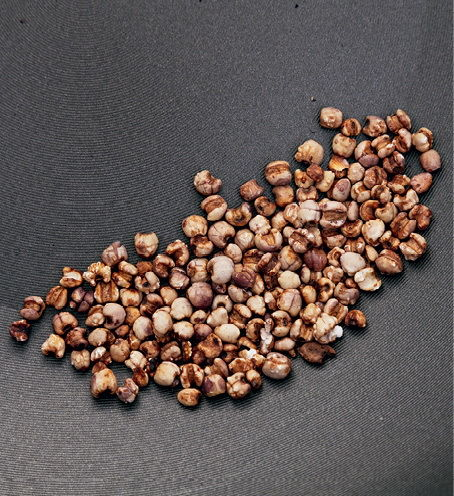
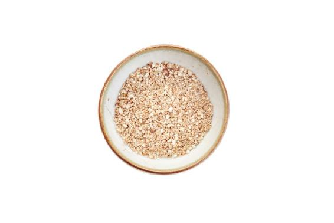
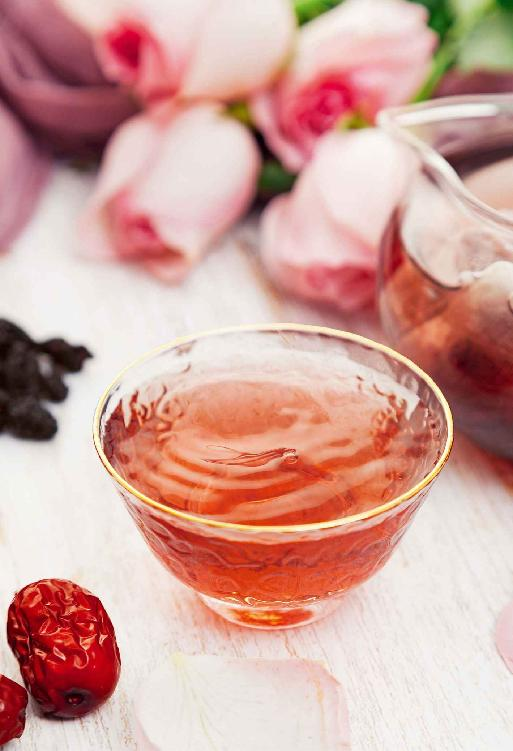